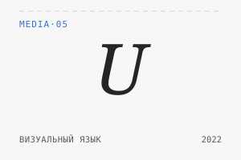
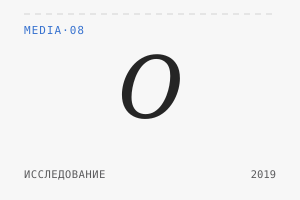
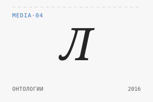

Публикации в СМИ
От свежих текстов про ROI UX-исследований и ИИ-эвристики до архивных эссе о визуальном языке и истории технологий.

Интерфейсы в научной фантастике
От видеофона в «Метрополисе» и астромата «Запретной планеты» до иконок Гигера в «Чужом» и нейроинтерфейсов «Призрака в доспехах» - фантастика как библиотека прототипов для спекулятивного дизайна.

Исследования смогут проводить только российские компании
Комментарий для ComNews о законе, ограничивающем деятельность иностранных исследовательских компаний в РФ: по мере цифровизации промышленности и городов данные становятся доступнее для исследователей любого профиля, а телефонные опросы - устаревающий формат для целей западных аналитических центров.

Профессии будущего в IT. Кто такой UX-исследователь?
Интервью для детской IT-школы: путь из философии в UX-исследования, ожидания от профессии на фоне роста LLM и вилка зарплат опытных специалистов.

Как увеличить производительность и экономическую эффективность UX-исследователя?
8 наборов эвристик (Нильсен, Шнейдерман, когнитивная инженерия) в промпте для LLM - автоматическая проверка макетов «Яги». Соавторы - Антон Шевелёв и Никита Денисенко.

Психология интерфейса: как UX-исследования помогают увеличить прибыль бизнеса
Как считать внутренний и внешний ROI UX-исследований: рост производительности, снижение ошибок, экономия на раннем выявлении проблем - с формулами и бенчмарками.

UX, философия и городское планирование. Как был придуман «первый» визуальный язык ISOTYPE
История Отто Нейрата, «красной Вены» и рождения инфографики ISOTYPE на пересечении логического позитивизма и социального жилищного строительства межвоенной Австрии.

Serious Games: прошлое, настоящее и будущее геймификации в новой экономике
Большой лонгрид: от военных симуляторов холодной войны и «Орегонской тропы» до Foldit и newsgames - история жанра serious games.

«Одноклассники» назвали самые популярные профессиональные праздники среди пользователей
День автомобилиста возглавил рейтинг, а популярность праздников оказалась заметно завязана на регион - от Дня металлурга до Дня космонавтики.

Исследование об общении родственников в соцсети
Братья и сёстры комментируют друг друга чаще всех остальных родственников (37,8% комментариев), а Москва - самый активный регион.

Литературоведение в цифровую эпоху
Как построить онтологию литературного произведения в Protégé - на примере «Москва - Петушки» Венедикта Ерофеева.